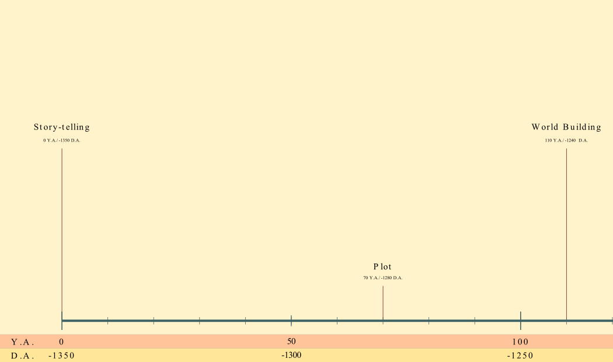

Post Archive

14/4/2023
How Maths models Movement: Physics Engine Tutorial 1
We'll review the maths needed to simulate physically accurate movement.
Read More
31/3/2023
Setting up the project: Physics Engine Tutorial 0
We'll start working on a physics engine to explore the wonderfull world of dynamics and mechanics!
Read More
17/3/2023
My experience participating in PTSDC
Two weeks ago, I participated in PTSDC. This post is somewhat of a reflection on what I did there
Read More
3/3/2023
Metroidvania Devlog 5: State Machine Refactoring and Editor Tool
The state machine system has been refactored and has a fancy new editor
Read More
17/2/2023
Metroidvania Devlog 4: Characters in a story-driven game
Come with me to take a look at how well crafted characters can massively improve a game.
Read More
3/2/2023
Metroidvania Devlog 3: Creating a compelling story for story-driven games
How do I come up with the story for my game? What even is a game's story?
Read More
20/1/2023
Metroidvania Devlog 2: State Machine Player Controller
In this post, we delve deep into the implementation of a Player Controller
Read More
6/1/2023
Metroidvania Devlog 1: Networking Solutions
As I mentioned in the last post, choosing the networking solution was quite a arduous task. So let's take a look at all the options I considered.
Read More
24/12/2022
Metroidvania Devlog 0: Introduction
The first in a series of devlogs about a metroidvania game
Read More